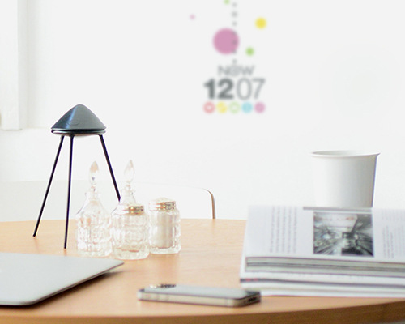
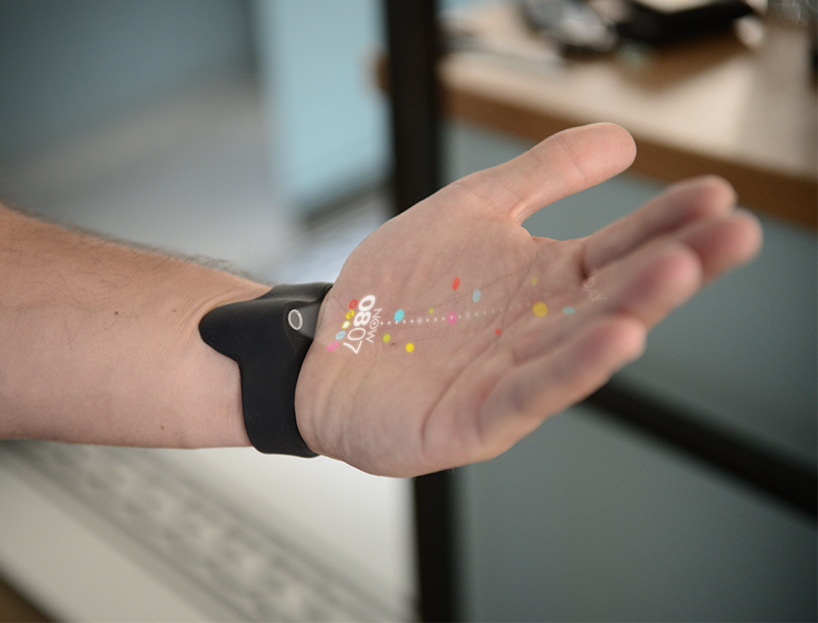
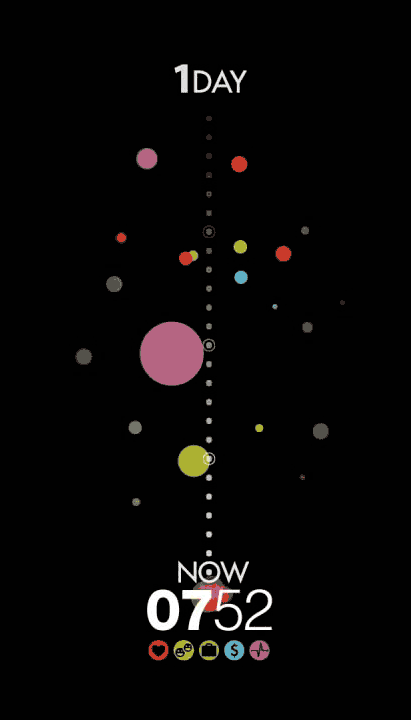
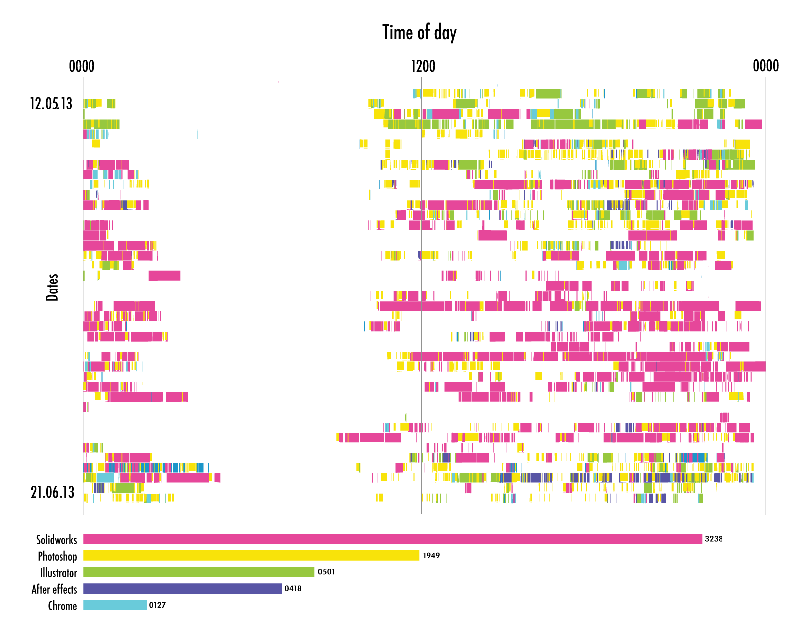
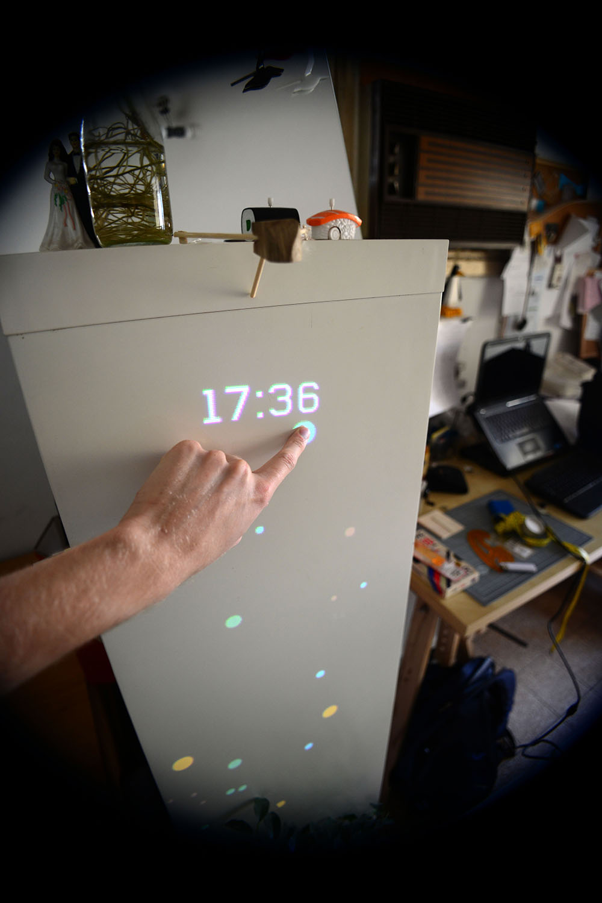
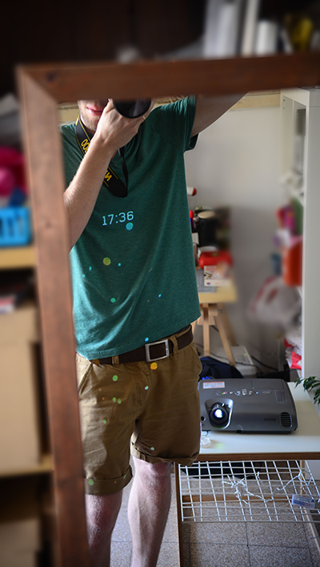
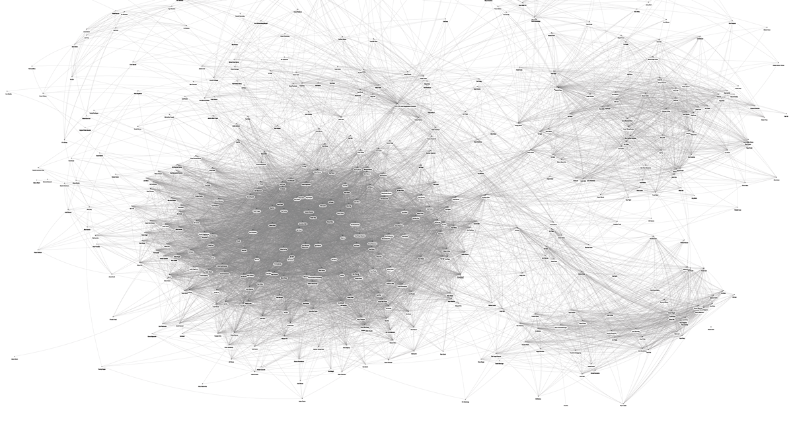

Concept
- Predictables is a conceptual app, designed for predicting future events.
- The application creates predictions based on the user’s digital “fingerprints”, by analyzing everyday events and data crossing.
- The idea behind the project is providing users with accessibility to their own-generated big data therefore allowing them with more control over it

Home projector

Hand projector

Predicting events

User feedback
Product Video
Process
- Mockups
- User research
- Survey

Research

Usability mockups

Projection tests

Data research - Facebook's connection network